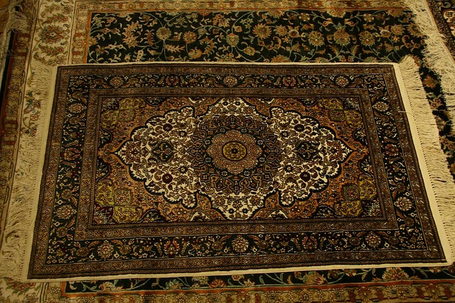
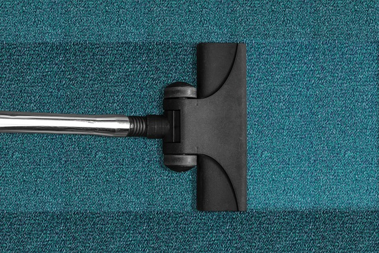
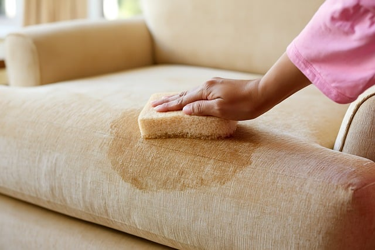

Halı ölçüsü, koltuk takımı ve yatak: seçin, toplam anında çıksın.
Gün ve saat aralığını seçin, adresi yazın.
Takip kodunuzla aşamayı görün.

Lalezar Halı & Koltuk Yıkama kurgusal bir işletmedir · Fiyatlar ve saatler örnektir, gerçek bilgiyi işletme belirler · Kepez / Antalya